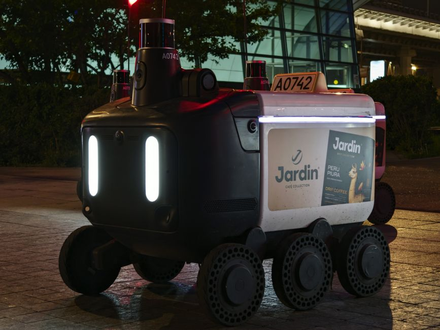

Imagine a world where tiny flying robots zip through the skies, not just following pre-programmed routes, but making smart decisions, dodging obstacles, and even learning from their environment. This isn't science fiction anymore; it's the incredible reality of AI-powered drones! For students, educators, and robotics enthusiasts across India, understanding these intelligent aerial vehicles isn't just fascinating – it's crucial for shaping the future. Get ready to explore how Artificial Intelligence is transforming drones from simple remote-controlled gadgets into autonomous, intelligent systems that are revolutionizing industries and opening up a sky full of possibilities.
What are AI-Powered Drones?
At their core, drones, or Unmanned Aerial Vehicles (UAVs), are aircraft without a human pilot on board. For years, most drones were operated by a person using a remote control, much like a sophisticated toy. However, AI-powered drones take this concept to a whole new level by integrating Artificial Intelligence (AI) to enable them to perform tasks autonomously, make decisions, and interact with their surroundings without constant human intervention.
Beyond Remote Control: The Power of Autonomy
The key differentiator for AI drones is their ability to operate with varying degrees of autonomy. Instead of just following a GPS waypoint, an AI drone can:
- Perceive: Understand its environment using cameras, sensors, and other inputs.
- Process: Analyze the data in real-time using AI algorithms.
- Decide: Make intelligent choices based on its mission and environmental conditions.
- Act: Execute movements and tasks without direct human input.
This autonomy means drones can perform complex missions, operate in dangerous or inaccessible areas, and even adapt to unexpected situations on the fly.
The Brain of the Drone: How AI Works
So, what exactly is the "AI" inside these drones? It's a combination of advanced software algorithms and powerful onboard processing units. Key AI components include:
- Machine Learning (ML): Allows drones to learn from data, recognize patterns, and improve performance.
- Computer Vision: Enables drones to "see" and interpret visual information for object detection, tracking, and navigation.
- Path Planning & Navigation: AI algorithms help drones calculate optimal routes and avoid obstacles dynamically.
"AI is not just about making drones smarter; it's about giving them the ability to understand, adapt, and operate in a complex, unpredictable world, truly extending human capabilities into the aerial domain."
How AI Transforms Drone Capabilities
The integration of AI elevates drones from mere flying cameras to intelligent aerial assistants. Here's how:
Enhanced Navigation and Obstacle Avoidance
Traditional drones often rely on GPS and pre-programmed flight paths. AI drones, however, use a combination of sensors (Lidar, ultrasonic, infrared, cameras) along with algorithms like SLAM (Simultaneous Localization and Mapping) to build a real-time 3D map of their environment. This allows them to:
- Navigate precisely indoors or in GPS-denied environments.
- Detect and dynamically avoid obstacles like trees, buildings, or even moving objects.
- Land autonomously in challenging terrains.
Intelligent Data Collection and Analysis
Instead of just recording raw footage, AI drones can analyze data onboard or transmit processed insights. This means:
- Object Recognition: Instantly identify specific objects, people, or anomalies (e.g., damaged power lines).
- Thermal Imaging Analysis: Automatically detect heat signatures for search and rescue or identify insulation issues.
- Precision Agriculture: Analyze crop health, identify pests, and precisely target treatments.
Swarm Robotics and Collaborative Missions
Imagine a fleet of drones working together seamlessly. AI enables swarm robotics, where multiple drones communicate, coordinate, and accomplish complex tasks collaboratively. This is vital for large-scale operations like covering vast areas for mapping, performing synchronized light shows, or delivering multiple packages simultaneously.
Key Technologies Powering AI Drones
Behind every intelligent drone is a suite of advanced technologies working in harmony:
- Computer Vision: Processes visual data from cameras for object detection and environment understanding.
- Machine Learning & Deep Learning: Algorithms trained on data enable tasks like anomaly detection and predictive maintenance.
- Sensor Fusion: Combines data from multiple sensors (GPS, IMU, Lidar, cameras) for robust understanding of position and environment.
- Edge Computing: Performs AI computations directly on the drone, reducing latency and reliance on cloud connectivity.
- Reinforcement Learning: Allows drones to learn optimal behaviors through trial and error.
Applications of AI Drones in India and Globally
AI-powered drones are already making a significant impact across various sectors, both in India and worldwide:
- Agriculture: Precision farming for crop monitoring, pest detection, and targeted spraying.
- Logistics & Delivery: Piloting drone delivery services for medical supplies, e-commerce, and food.
- Infrastructure Inspection: Autonomous inspection of power lines, pipelines, bridges, and wind turbines.
- Search and Rescue: Quickly covering large disaster zones, locating missing persons using thermal cameras and AI.
- Security & Surveillance: Intelligent, autonomous surveillance for border patrol, critical infrastructure, and events.
- Filming & Photography: Autonomous subject tracking, perfect shot framing, and cinematic footage capture.
A Glimpse into the Code: How Drones "See"
To understand how a drone might "see" an object, let's look at a simplified conceptual example using Python and a hypothetical computer vision library. This isn't production-ready code, but it illustrates the idea of processing an image to find something specific.
import cv2 # A common library for computer vision
import numpy as np
def detect_red_object(frame):
"""
Simulates detecting a red object in a drone's camera frame.
In a real scenario, this would involve more complex ML models.
"""
hsv = cv2.cvtColor(frame, cv2.COLOR_BGR2HSV) # Convert to HSV color space
# Define range for red color in HSV
# Note: Red wraps around, so often two ranges are needed
lower_red1 = np.array([0, 100, 100])
upper_red1 = np.array([10, 255, 255])
lower_red2 = np.array([160, 100, 100])
upper_red2 = np.array([179, 255, 255])
mask1 = cv2.inRange(hsv, lower_red1, upper_red1)
mask2 = cv2.inRange(hsv, lower_red2, upper_red2)
mask = mask1 + mask2 # Combine masks
# Find contours in the mask
contours, _ = cv2.findContours(mask, cv2.RETR_TREE, cv2.CHAIN_APPROX_SIMPLE)
if contours:
# Find the largest contour (assumed to be our object)
largest_contour = max(contours, key=cv2.contourArea)
if cv2.contourArea(largest_contour) > 500: # Minimum size threshold
x, y, w, h = cv2.boundingRect(largest_contour)
return (x, y, w, h) # Return bounding box coordinates
return None
# --- Drone's main loop (conceptual) ---
def drone_flight_loop(camera_feed):
for frame in